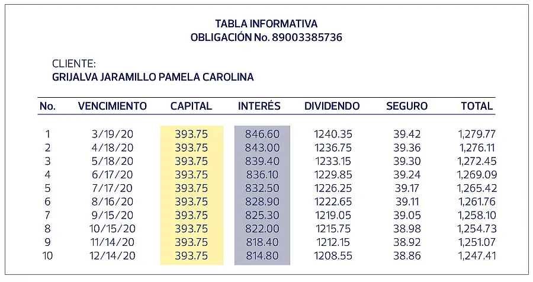

A diferencia del francés, el sistema de amortización alemán establece que el valor de las cuotas es variable y decreciente cada mes y hasta la cancelación total de la deuda. Lo que quiere decir que la primera cuota será la más alta de todas y la siguiente siempre será más baja que la anterior.
